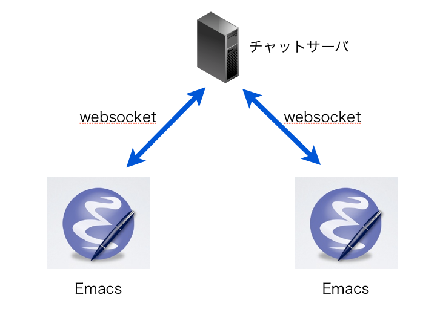

Your browser doesn't support the features required by impress.js, so you are presented with a simplified version of this presentation.
For the best experience please use the latest Chrome or Safari browser. Firefox 10 (to be released soon) will also handle it.
ウチコ (@memememomo)
京都でプログラマをやってます

Amon2::Lite
WebSocketプラグイン
websocket.el
WebSocketライブラリ
(require 'websocket-chat) (setq wsc:host "192.168.56.111") (setq wsc:port 5000)
Use a spacebar or arrow keys to navigate